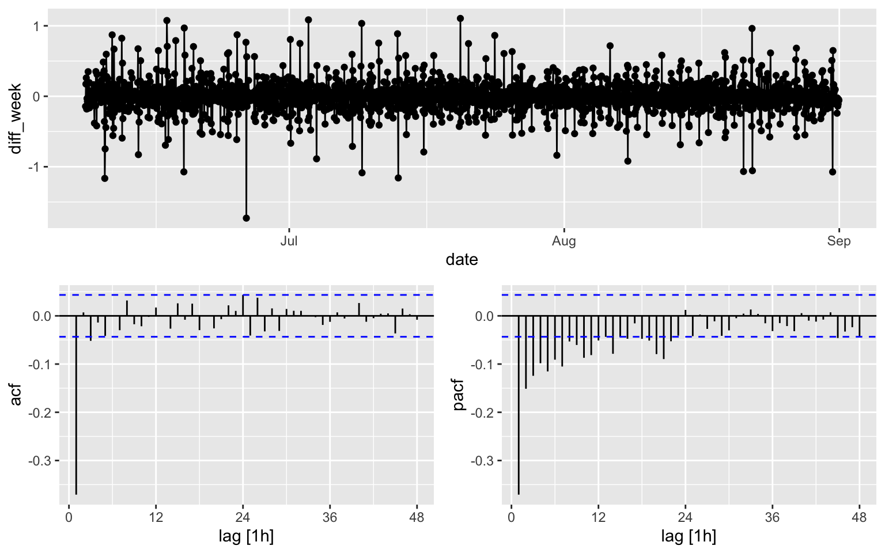
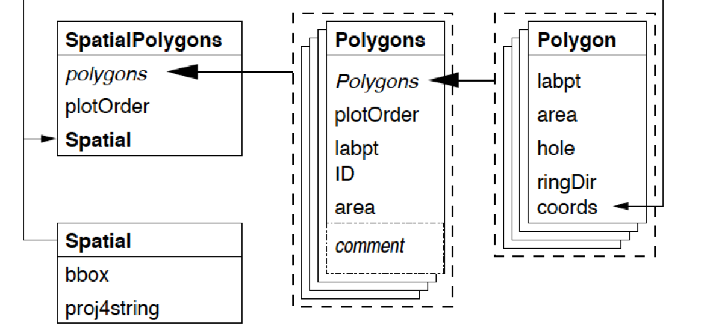
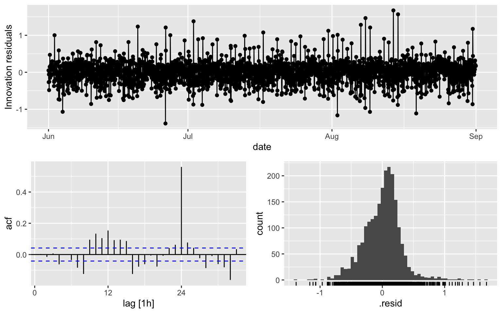

Week 2: Spatial Data Classes – package sp
1 Goal
- In this lab, you will learn
- Creat different type of spatial objects
- Some basic property and manipulation of these spatial objects
2 SpatialPointsDataFrame Class
Information of spatial class can be found in class notes: Chpater 1–Visualisation.
The diagram will help 
2.1 Create Spatial Class
library(sp)
m=matrix(c(0,0,1,1),ncol=2, dimnames=list(NULL, c("min","max")))
crs=CRS(projargs="+proj=longlat +ellps=WGS84") ## Warning in showSRID(uprojargs, format = "PROJ", multiline = "NO", prefer_proj =
## prefer_proj): Discarded datum Unknown based on WGS84 ellipsoid in CRS definitionS=Spatial(bbox=m, proj4string=crs)2.2 Create SpatialPoints Class
Recall SpatialPoints = Spatial + coords
lcoords=matrix(rep(1:4,each=2),ncol=2,byrow=T) ## coords
SP=SpatialPoints(lcoords,bbox = m, proj4string = crs)
## Access the elements
bbox(SP)## min max
## [1,] 0 1
## [2,] 0 1proj4string(SP)## Warning in proj4string(SP): CRS object has comment, which is lost in output## [1] "+proj=longlat +ellps=WGS84 +no_defs"SP@coords## coords.x1 coords.x2
## [1,] 1 1
## [2,] 2 2
## [3,] 3 3
## [4,] 4 4SP@bbox## min max
## [1,] 0 1
## [2,] 0 1SP@proj4string## CRS arguments: +proj=longlat +ellps=WGS84 +no_defs## plot
plot(SP)
- Question: There are supposed to be four points.
- Why are you only seeing one?
- Do you know how to fix it (hint: adjust bbox)
2.3 Create SpatialPointsDataFrame Class
Recall SpatialPointsDataFrame = SpatialPoints + data.frame
names=c("a","b","c","d")
df = data.frame(xvals=c(1.1,1.2,1.6,2.1), row.names=names)
m = matrix(c(0,0,5,5),ncol=2, dimnames=list(NULL, c("min","max")))
SP@bbox = m
SPDF = SpatialPointsDataFrame(SP,data=df)
## Access the elements
SPDF@data## xvals
## a 1.1
## b 1.2
## c 1.6
## d 2.1## Plot: location with value
spplot(SPDF,zcol="xvals")## Another way to create SpatialPointsDataFrame (directly from a data.frame)
SPDF2 = data.frame(name = names, x = lcoords[,1], y = lcoords[,2], value = df )
coordinates(SPDF2) = ~x+y
class(SPDF2)## [1] "SpatialPointsDataFrame"
## attr(,"package")
## [1] "sp"3 SpatialPolygonsDataFrame
Due to time constrain, I will not talk about spatiallines class. Instead, I will focus on SpatialPolygonsDataFrame.
First, the diagram 
3.1 Create Polygon
#getClass("Polygon")
Sr1 = Polygon(cbind(c(2,4,4,1,2),c(2,3,5,4,2)))
Sr2 = Polygon(cbind(c(5,4,2,5),c(2,3,2,2)))
Sr3 = Polygon(cbind(c(4,4,5,10,4),c(5,3,2,5,5)))
Sr4 = Polygon(cbind(c(5,6,6,5,5),c(4,4,3,3,4)), hole = TRUE)3.2 Create Polygons
Note the difference between the previous subsection: Polygon vs Polygons
#getClass("Polygons")
Srs1 = Polygons(list(Sr1), "s1")
Srs2 = Polygons(list(Sr2), "s2")
Srs3 = Polygons(list(Sr3, Sr4), "s3/4")3.3 Create SpatialPolygons
#getClass("SpatialPolygons")
SpP = SpatialPolygons(list(Srs1,Srs2,Srs3), 1:3)
plot(SpP, col = 1:3, bg="yellow")Note that there is a hole in one of Polygons
3.4 Create SpatialPolygonsDataFrame
#getClass("SpatialPolygons")
df = data.frame(xval = c(1.2,1.3,1.6), yval = c(2.2,2.8,3.9), row.names = row.names(SpP))
SpPDF = SpatialPolygonsDataFrame(Sr = SpP, data = df)
spplot(SpPDF, zcol = "xval") The argument “row.names = row.names(SpP)” is needed.
4 Key Functions
- Create spatial objects
- Spatial
- SpatialPoints, SpatialPointsDataFrame
- SpatialPolygons, SpatialPolygonsDataFrame
- Visualization
- spplot
5 Further Study
Study vector data manipulation(https://rspatial.org/raster/spatial/7-vectmanip.html). Here, vector data is referring to SpatialPolygonsDataFrame.
6 References
- For more information, please see (Not required to read, and treat the following materials as reference. )
- Classes and Methods for Spatial Data: the sp Package (https://cran.r-project.org/web/packages/sp/vignettes/intro_sp.pdf)
- Introduction to visualising spatial data in R (https://cran.r-project.org/doc/contrib/intro-spatial-rl.pdf)
- Spatial data manipulation (https://rspatial.org/raster/spatial/index.html)